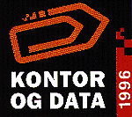

Velkommen som utstiller!English version
9. - 13. september 1996 braker det løs igjen. Kontor & Data '96 inviterer ditt firma til å delta som utstiller på Norges desidert største kontor og datamesse.
Kontor & Data'96 er et samarbeidsprosjekt mellom Kontor og Datateknisk Landsforening, KDL og Norges Varemesse. Messen tar sikte på å vise et bredt spekter av hva bransjen har å tilby innenfor nevnte områder. Kontor & Data er det eneste steder som gir kundene et samlet overblikk. Når det kommer ca. 40.000 potensielle kunder er det unødvendig å si at det lønner seg å være der. Og deltagelse gir resultater, utstillernes dom på Kontor og Data'94 taler for seg:
- 98% knyttet kontakter i løpet av utstillingen.
- 90% var meget godt eller godt fornøyd med Kontor & Data'94.
- 91% var meget godt eller godt fornøyd med antall besøkende.
- 89% var meget godt eller godt fornøyd med de besøkendes faglige tilknytning.
- 95% var meget godt eller godt fornøyd med med utstillingens faglige kvalitet.
- 64% svarte ja på at de ville være med på Kontor & Data'96, 36% svarte vet ikke, mens ingen svarte nei.
Kontor & Data'94 ble rangert av utstillerne som vesentlig bedre enn konkurrerende messer i Norge. I 1996 tar vi for oss følgende temaer.
Mer informasjon kommer i løpet av første uke i desember.
Idag vil man sette seg inn i funksjon og helhet, istedenfor å se på et enkelt produkt eller teknikk. Systemtenkning og helhet er viktig for det gir konkurransefordeler. Beslutningstagere må derfor ha muligheten til raskt og enkelt skaffe seg oversikt over markedets tilbud. Det kan man bare få på en messe som gir de besøkende hele spekteret av hva bransjen har å tilby. Det er du som har kunnskapen om løsninger og muligheter, på Kontor & Data'96 kan du vise beslutningstakerne dine løsninger.
Schibsted Nett
Last modified: Wed Jan 3 17:26:58 1996